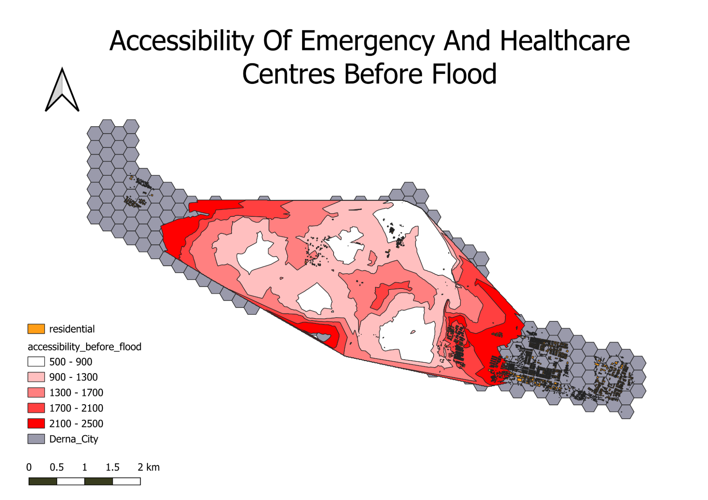
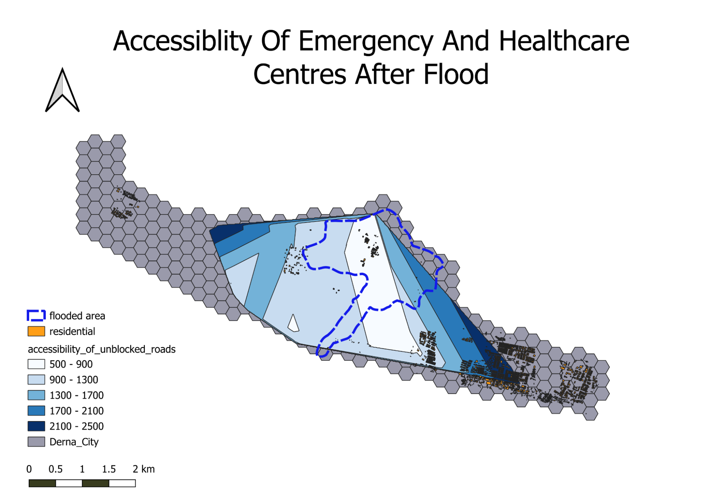
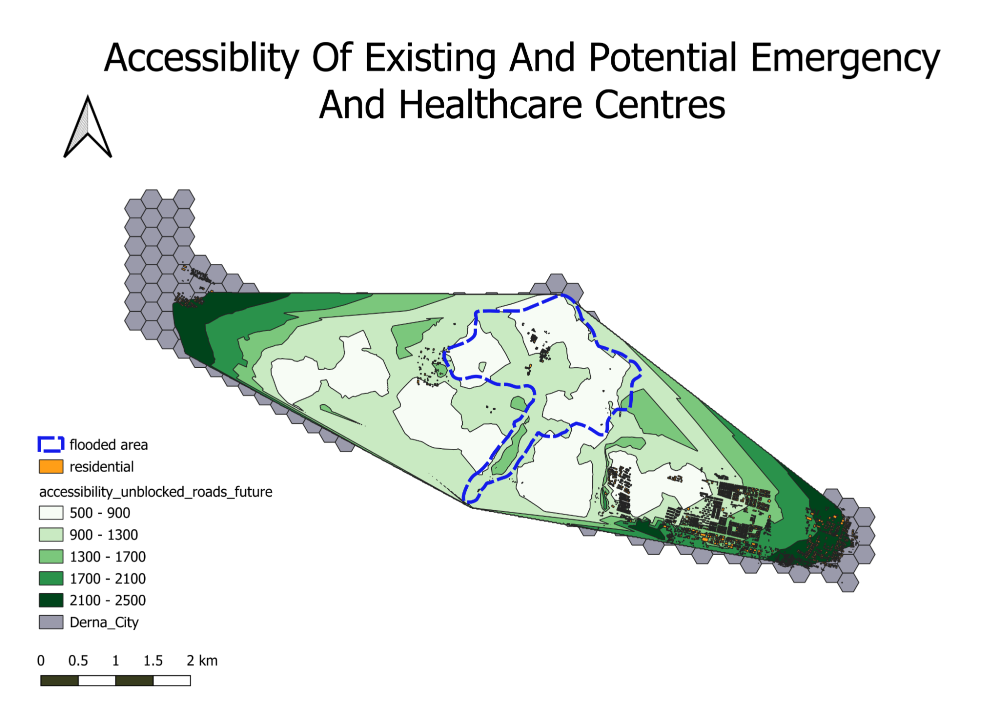
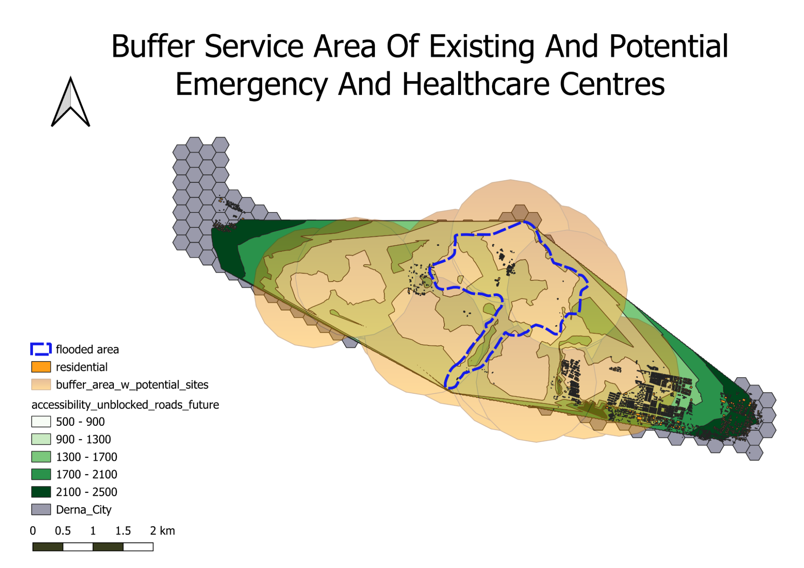

Results and Discussion
Derna City’s Accessibility During a Flood
The following maps shows the accessibility of residential towns to evacuation centres and healthcare facilities. The maps also shows some potential education centres that can be used as a evacuation centres during a disaster.

Prior to the flood, we observe a lack of accessibility of residential areas to emergency services and healthcare facilities. A substantial number of residential towns on the East and West of Derna City are entirely inaccessible to shelters. Moreover, majority of residential towns have access to shelters are situated more than 1km away. This suggests that during an emergency, most residents will have to evacuate to shelters that are more than 1 km away from them (as seen in dark red areas where two other residential towns are found from legend), which is not very ideal.

Following a flood, roads are blocked and damaged, leading to a drastic reduction in the accessibility of healthcare and emergency centres compared to Figure 1. There are now fewer highly accessible shelters as compared to Figure 1 (as seen from reduced white areas ). Since the only residential town that falls within the 900m is also within the flooded area, the shelters in that location may have been flooded as well. Hence, the nearest shelter outside the flooded area may be less accessible for the displaced residents there. Additionally, fewer residential towns are now within 2.5 km of a shelter compared to Figure 1.

In Figure 3, we observe the delineated buffer service area that the shelters can cover within a 1 km radius. The figure suggests that most of the residents affected by the flooded area are within the service area (as seen where the entire flooded area within the pink buffers). However, residential towns in the East and West of Derna City are not covered by the buffer service area, which suggests that these areas have less accessibility to a shelter. In the event where a more impactful flood strikes Derna City, the residential towns that are more than 2.5 km away and not within the service area of a shelter will become more vulnerable if they are flooded.

We analysed the elevation level and slope degree of potential sites to be used as emergency shelters during a flood event. Since we want to identify areas at risk of flooding and understand which parts of Derna City are most vulnerable, having a high elevation level and slope degree are key. Higher elevation level suggests that the area is less prone to flooding. Higher slope degree will generate more velocity than gentle slopes, which increases surface runoff and discourages ponding.
As our aim is to identify safe locations for emergency shelters and reduce the vulnerability of residents, we assigned greater importance to elevation levels over slope degrees. Low elevation areas, when combined with mid or high slope degrees, can serve as valuable sites for emergency shelters. Thus, we excluded areas with low slope degree from our potential sites selections. The potential sites that we chose are marked in pink, green, yellow, light blue and purple.
These sites are located in lower risk flood areas and are less vulnerable to flooding. This is compared to points within the flooded area that have low slope degree, the blue and orange points, which are more vulnerable and already susceptible to floods.

